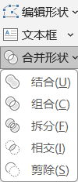

开始
Home
- 内容 Contents
- 幻灯片
- 绘图
- 编辑 → 替换
幻灯片
- 新建幻灯片
- 在"幻灯片"窗格中，将光标定位到插入位置的前后幻灯片中间，出现一条红色提示线，按回车 Enter；或使用菜单命令"新建幻灯片"
- 快捷键 CTRL + M
- 版式
- 为选择的幻灯片指定版式
- 通常使用右键菜单操作
- 版式要先在：视图 → 幻灯片母版 中定义
- 重置
- 幻灯片应用版式后，如果对内容进行了样式调整，想放弃调整，可以使用这个命令，还原到版式设置的最初样式
- 节
- 可以插入节来归类幻灯片
- 默认情况下，所有幻灯片属于同一节"默认节"
- 单击节标题：可以单独设置当前节的主题样式
- 右键单击节标题：修改重命名、移动、展开、删除等更多操作
- 快速操作
单击节标题前面的三角符号：快速展开和折叠幻灯片
单击节标题并拖动，调整节的位置
- 插入
- 选择：单选、多选、连续选择SHift + 单击、断续选择Ctrl + 单击、全选CTRL + A
- 移动：选择并拖动；幻灯片数量多的时候，使用"幻灯片浏览"视图操作
- 复制：选择并复制；按键 Ctrl + C
- 粘贴：定位并粘贴；按键 Ctrl + V
- 删除：选择并删除，按键 Delete
- 版式：右键幻灯片 → "版式"；或选择幻灯片 → "开始" → "幻灯片" → "版式"


幻灯片基本操作
绘图
- 基本图形
- 使用时，会激活动态选项卡"绘图工具"，单击"形状格式"，实现图形的编辑、合并形状/矢量运算、形状样式、艺术字和排列、大小等更多操作
- 合并形状
- 也叫矢量运算 Merge Shapes：可以对2个或2个以上的对象做任何编辑，达到设计的效果
- 强烈推荐好好掌握！！！
- 根据先选择的对象为参考对象进行矢量运算；以下示例都是先选择绿色矩形再选择黄色椭圆
- 排列
- 单个对象：单个对象的参考对象是幻灯片
- 多个对象：按照他们的占用空间指定排列方式



编辑
- 替换
- 替换字体